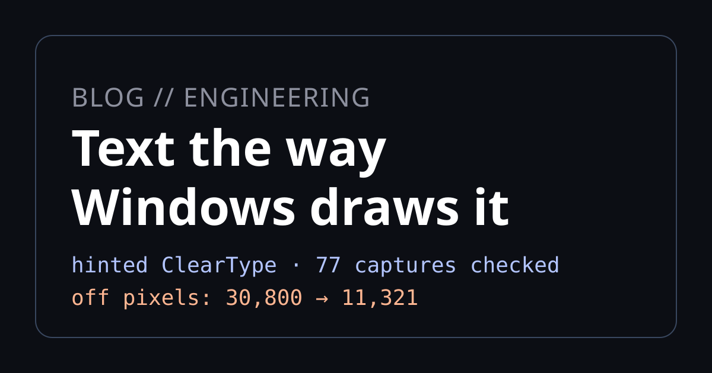
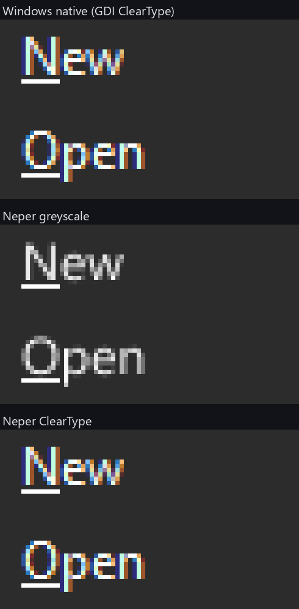
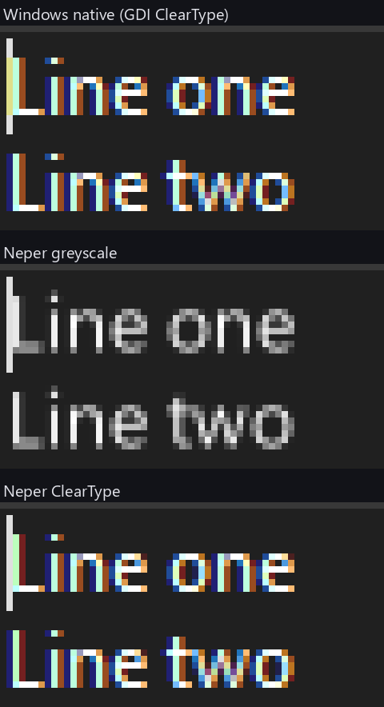

Text the way Windows draws it: ClearType in Neper

Neper's Windows look now draws its text as hinted ClearType, the way Windows itself does, instead of grey anti-aliasing. Against 77 native Windows dark captures the number of pixels that differ from Windows fell from 30,800 to 11,321. It is closer, not identical, and this post says how it works and where it still differs.
What ClearType is
A colour LCD pixel is three stripes side by side: red, green and blue, in that order. Ordinary anti-aliasing treats the pixel as one dot and shades it grey. ClearType treats the three stripes as three separate dots, so the screen has three times the horizontal resolution for text. A vertical stem can start a third of a pixel to the right and the neighbouring stripes show it.
Lighting stripes independently would put a coloured edge on every glyph, so ClearType filters: each stripe's brightness averages a window a few stripes wide. That keeps the extra resolution while spreading the colour enough that the eye reads a sharper edge instead of a rainbow. The coloured fringes you see when you zoom in are the stripes; at normal size the eye blends them.
The second half is hinting. A TrueType font carries small programs, in bytecode, that move the points of each outline at a given size so that stems and crossbars land on whole pixels. Without them an e at 12 pixels is a smear; with them the crossbar is one crisp row. Windows runs those programs, and the shapes it draws depend on running them the way Windows does.
How Neper does it
Neper's Windows look is compared against real Windows controls, and text is most of the pixels in a control, so the text has to match too. Three pieces do it, all written in Neper:
- A bytecode interpreter (
lib/e/text/tthint.e, withlib/e/text/ttglyph.ereading the glyphs) runs the font's own programs. It has the two machines Windows uses: a black-and-white one that gives each glyph's advance width, and a ClearType one that gives the outline. The Windows ClearType rules, such as the 1/16 pixel cut-in along x and ignoring the x part of the delta instructions, were found by comparing the interpreter's outlines with the ones Windows returns, instruction by instruction. - A rasteriser (
lib/e/gfx/cleartype.e) fitted to what GDI draws. Each pixel row is sampled by five scanlines, each scanline by six samples across the pixel. A stripe's coverage is the number of set samples in a window one pixel wide centred on it, so neighbouring stripes share four of their six samples; that sharing is the filter. Curves are kept as curves rather than flattened, because flattening blurred the bowls of letters in a way GDI does not. - A blend that applies the coverage to the background with a gamma of 1.2 on each channel, as GDI does, so light text on dark has the same weight as Windows draws it.
Pen positions follow Windows too: each glyph advances by its hinted whole-pixel advance, and the baseline sits on a whole pixel row.
It is a switch on the scene, not a global change:
scene.set_text_aa(.Grayscale) // the default, and the only mode of every other look
scene.set_text_aa(.ClearType) // what the Windows look asks for
$ NEPER_TEXT_AA=grayscale ./app # draw the Windows look in grey; =cleartype forces it for any lookSetting the Windows look turns ClearType on. Every other look (Neper, Linux, Cupertino, Material) stays greyscale and unchanged. The fonts, Segoe UI and Tahoma, are read from C:\Windows\Fonts at run time and never shipped. Text that cannot take the path, such as a font without instructions, a rotated or scaled transform, a non-solid brush or a translucent canvas, falls back to greyscale for that text only, so nothing disappears.
What it looks like
Both figures are a crop of the same control, magnified with nearest-neighbour scaling so each square is one screen pixel. The top row is a capture of the real Windows 11 control in dark mode, the middle row is Neper with ClearType switched off, and the bottom row is Neper's default Windows rendering.


The bottom rows are not copies of the top rows. In the edit crop the stem of the L has a different colour mix on its first column than in Windows, and a few letters differ by a stripe. That difference is what the numbers below count.
What we measured
The check is scripts/looks_dark_native.py. It cuts each native Windows 11 dark capture to its control, finds the best whole-pixel placement in our rendered sheets, and counts the flat-area pixels where any channel differs by more than 2 levels. With LOOKS_GLYPHS=1 the glyph pixels count too, which is the strict form used here.
| Dark native capture | Greyscale text | ClearType text |
|---|---|---|
| All 77 captures, pixels off | 30,800 | 11,321 |
| Radio button, rest | 238 | 28 |
| Popup menu, rest | 906 | 87 |
| Multiline edit, focused | 543 | 64 |
The ClearType total and the three single-capture rows were rerun for this post: ClearType from the committed sheets, greyscale from a render made with NEPER_TEXT_AA=grayscale. The greyscale total is the figure recorded when the feature landed.
Of the hinted points of Segoe UI at 12 pixels, about 55 percent land exactly where GDI puts them; the rest are off by one to three 64ths of a pixel. Tahoma at 11 pixels is weaker. 11,321 pixels still differ across the captures, so the result is closer to Windows, not equal to it.
Limits
- Windows fonts, read from Windows. The interpreter needs the font's instructions, and the fonts come from the system at run time. Where they are missing the text is greyscale.
- The interpreter knows what could be measured. Its rules were found by comparing outlines with Windows' own, and the module says it hints and does not claim to reproduce GDI. There are rules we have not found.
- Older captures show no gain. The v3 grabs were taken with
PrintWindowand are softer than GDI ClearType, so against those, ClearType text is about even with greyscale. The native captures are the yardstick. - Layout can move by a pixel. Constants tuned for greyscale rounding may be one pixel off under ClearType; the dark popup menu's label moved from x 31 to 32.
- The numbers are for the dark theme. The light captures are checked with
LOOKS_THEME=light, but the figures here do not cover them.
Is it good enough?
For making the Windows look read like Windows, yes. Across the 77 captures the count of differing pixels fell by about 63 percent. What remains is mostly a stem sitting one pixel off, or a colour fringe slightly too strong or too weak. You can see it when the text is zoomed to 8x, as in the pictures above, but not at normal size. It is also optional: only the Windows look uses it, and NEPER_TEXT_AA=grayscale turns it off.
For being pixel-exact, no, and we do not claim it. A control only counts as matched in our progress tracking when the text edges are judged separately from the shapes around them. Counting every text pixel as well still fails several controls: the popup menu, the check list box, the page control, the toolbar button and the disabled label in the dark theme.
What it would take to be pixel-exact
It is possible if we limit it to the fonts and sizes the Windows look actually uses, Segoe UI and Tahoma at about six sizes. It is not realistic for arbitrary fonts. The gap has four causes:
- The interpreter is not bit-identical. Windows' own scan converter has fixed-point rounding rules, instruction quirks and dropout handling that differ from ours, especially in Tahoma's older hinting programs.
- The blend is one fit for everything. GDI blends with gamma tables that depend on the text colour, plus the ClearType tuner settings. We use a single fitted blend (gamma 1.2).
- Fonts and settings are unverified. The capture machine's font versions and ClearType settings may differ from the files we read.
- Some captures are not GDI. Windows 11 controls often draw with DirectWrite, which rounds differently from GDI, and the v3 program uses GDI.
The plan is to build a ground-truth oracle first: a small native program that renders every glyph of the used fonts, sizes and text colours with real GDI. We then diff our hinted outlines and rasterised pixels against thousands of known glyphs instead of a few screenshots, fix the interpreter until every glyph agrees, fit the blend per text colour, record the fonts and settings, and add a test that fails if any glyph differs. We have not started on this; until we do, treat the figures above as close, not exact.
Try it
The design record is D5163 in docs/decisions.md, and docs/ui/looks-howto.md has the section on rendering the sheets. To reproduce the table, render the Windows dark sheets and run the check from the repository root:
$ LOOKS_GLYPHS=1 python -I scripts/looks_dark_native.py
$ LOOKS_GLYPHS=1 python -I scripts/looks_dark_native.py radio menu-popup edit-multiline-focusIf your numbers disagree with ours, we want to know.